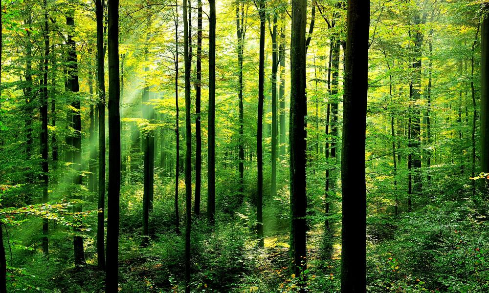
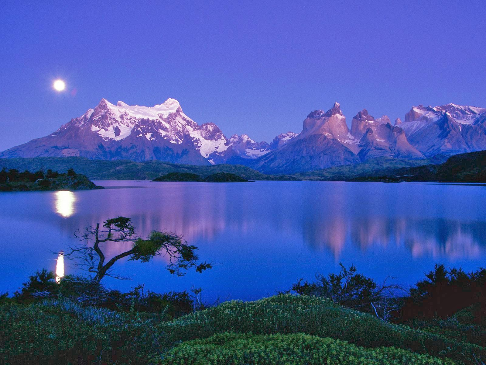
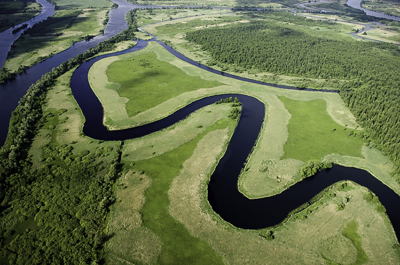
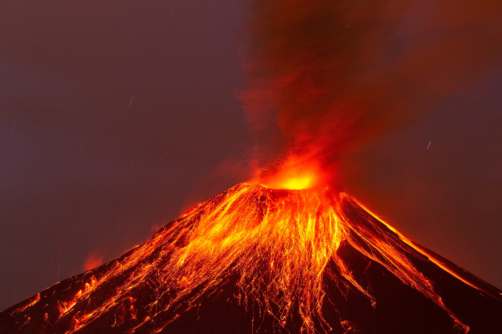

FOREST

BEACH

MAONTAIN

RIVER

DESERT

VOLCANO
A volcano is a rupture in the crust of a planetary-mass object, such as Earth, that allows hot lava, volcanic ash, and gases to escape from a magma chamber.
A river is a natural flowing watercourse, usually freshwater, flowing towards an ocean, sea, lake or another river. In some cases a river flows into the ground and becomes dry .
A beach is a landform along a body of water. It usually consists of loose particles, which are often composed of rock, such as sand, gravel, shingle, pebbles, or cobblestones.
A tree typically has many secondary branches supported clear of the ground by the trunk. This trunk typically contains woody tissue for strength, and vascular tissue to carry materials from one part of the tree to another.
A flower, sometimes known as a bloom or blossom, is the reproductive structure found in plants that are floral (plants of the division Magnoliophyta, also called angiosperms). The biological function of a flower is to effect reproduction.
A mountain is a large landform that stretches above the surrounding land in a limited area, usually in the form of a peak. A mountain is generally steeper than a hill. Mountains are formed through tectonic forces or volcanism.